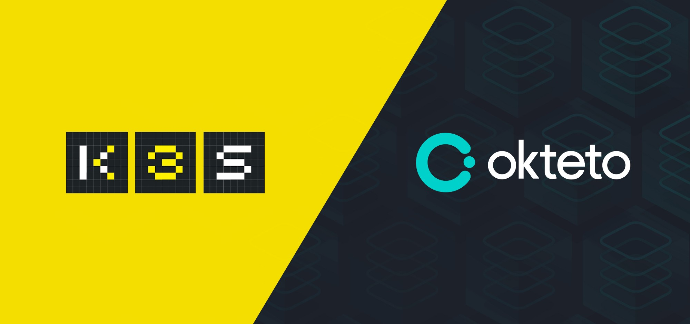
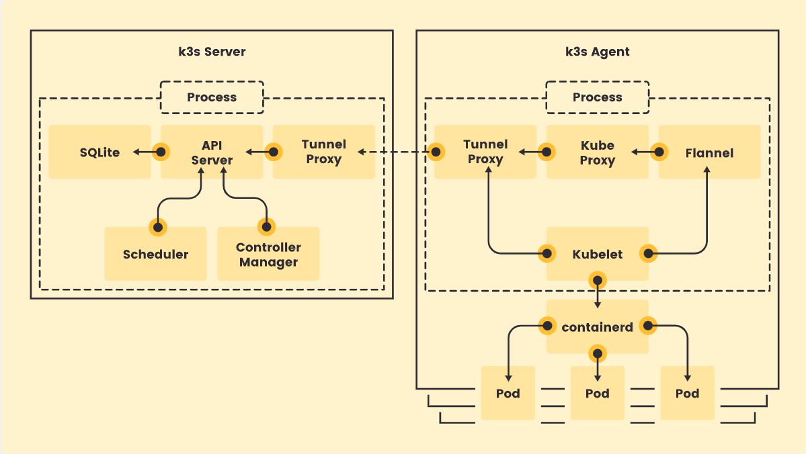
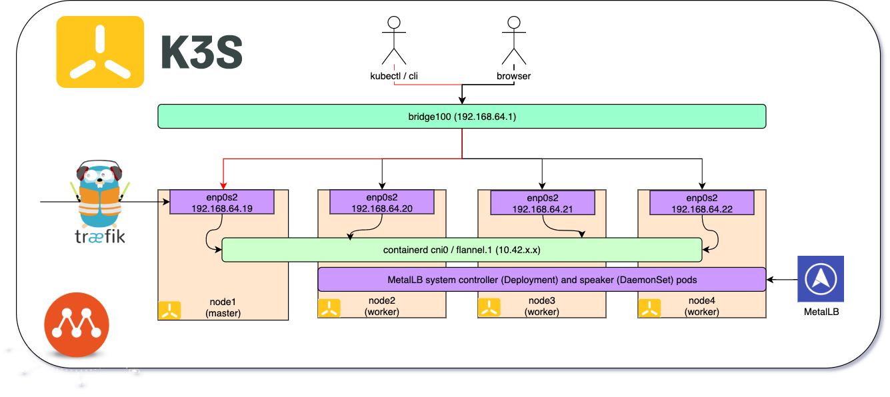
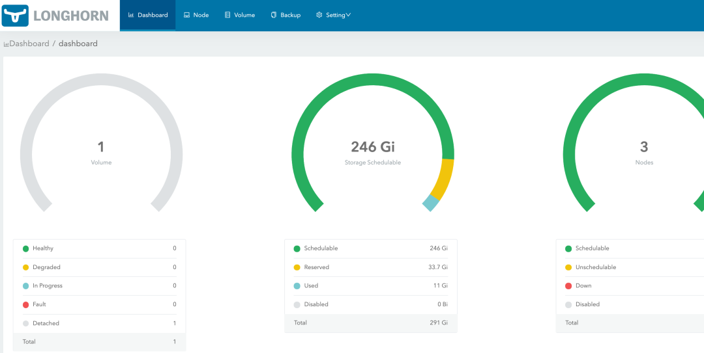

k3s: 带你尝鲜史上最轻量 Kubernetes 发行版!
我们都知道 Kubernetes 是一个容器编排平台，可以用来管理我们的容器集群。但是如果我们只是作为学习来使用的话，Kubernetes 未免有些太重了，有些人的本机估计都没有办法来运行完整的 3 实例(一个 master，两个 agent)的集群环境。虽然网上也有使用 vagrant 和 machine 的部署方式，但是使用和配置还是比较复杂的。而 k3s 就是为了解决上述问题，应运而生的。

1. 项目介绍
我们首先需要了解该项目的适用场景和功能特点！
了解或使用过 Kubernetes 的用户来说，肯定都听说过 Rancher 这个开源产品，其同样也是一款开源的企业级 Kubernetes 管理平台，可以极为出色地安装和管理Kubernetes 集群。而 k3s 这款轻量级的 Kubernetes 发行版，也是该公司创建和维护的。
k3s 同样还是一款完全通过 CNCF 认证的 Kubernetes 发行版，这意味着我们可以通过编写 YAML 来对完整版的 Kubernetes 进行操作，并且它们也将适用于 k3s 集群。并且，其完全实现了 Kubernetes 提供的所有 API 接口，我们可以自由的通过接口来操作 Kubernetes 了。创建 k3s 项目的主旨是为了打造一个非常非常轻量级的 Kubernetes 发行版，主要适用于下面这些方面：
- Edge
- IoT
- CI
- Development
- ARM
- Embedding K8s
- Situations where a PhD in K8s clusterology is infeasible
k3s 将安装 Kubernetes 所需的一切打包进仅有 XXMB 大小的二进制文件中。并且，为了减少运行 k8s 所需的内存，删除了很多不必要的驱动程序，并用附加组件对其进行替换。这样，它只需要极低的资源就可以运行且安装所需的时间也非常短，因此它能够运行在树莓派等设备上面，即 master 和 agent 运行在一起的模式。
裁剪功能
- 过时的功能和非默认功能
- 过时的功能和非默认功能
Alpha功能 - 过时的功能和非默认功能内置的云提供商插件
- 过时的功能和非默认功能内置的存储驱动
- 过时的功能和非默认功能
Docker
| PROTOCOL | PORT | SOURCE | DESCRIPTION |
|---|---|---|---|
| TCP | 6443 | K3s agent nodes | Kubernetes API |
| UDP | 8472 | K3s server and agent nodes | Required only for Flannel VXLAN |
| TCP | 10250 | K3s server and agent nodes | kubelet |
项目特点
- 使用
SQLite作为默认数据存储替代etcd，但etcd仍然是支持的 - 内置了
local storage provider、service load balancer等 - 所有
k8s控制组件如api-server、scheduler等封装成为一个精简二进制程序，单进程即可运行 - 删除内置插件，比如
cloudprovider插件和存储插件等 - 减少外部依赖，操作系统只需要安装较新的内核以及支持
cgroup即可
- 使用
| DEPLOYMENT SIZE | NODES | VCPUS | RAM |
|---|---|---|---|
| Small | Up to 10 | 2 | 4 GB |
| Medium | Up to 100 | 4 | 8 GB |
| Large | Up to 250 | 8 | 16 GB |
| X-Large | Up to 500 | 16 | 32 GB |
| XX-Large | 500+ | 32 | 64 GB |
缺点不足
- 因为在高可用的场景中，其没有办法做到或很难做到。所以如果你要进行大型的集群部署，那么我建议你选择使用
K8s来安装部署。如果你处于边缘计算等小型部署的场景或仅仅需要部署一些非核心集群进行开发/测试，那么选择k3s则是性价比更高的选择。 - 在单个
master的k3s中，默认使用的是SQLite数据库存储数据的，这对于小型数据库十分友好，但是如果遭受重击，那么SQLite将成为主要痛点。但是，Kubernetes控制平面中发生的更改更多是与频繁更新部署、调度Pod等有关，因此对于小型开发/测试集群而言，数据库不会造成太大负载。
- 因为在高可用的场景中，其没有办法做到或很难做到。所以如果你要进行大型的集群部署，那么我建议你选择使用
当然如果想学习 k8s，而又不想折腾 k8s 的繁琐安装部署，完全可以使用 k3s 代替 k8s，k3s 包含了 k8s 的所有基础功能，而 k8s 附加功能其实大多数情况也用不到。
# This won't take long ...
$ curl -sfL https://get.k3s.io | sh -
# Check for Ready node, takes maybe 30 seconds
$ k3s kubectl get node2. 项目架构
下图是官方网站上面提供的其项目架构的图示！
k3s 安装包中已经包含了 containerd、Flannel、CoreDNS 组件，非常方便地一键式安装，不需要额外安装 Docker、Flannel 等组件。
- Architecture

- Single-server Setup with an Embedded DB

- High-Availability K3s Server with an External DB

- Fixed Registration Address for Agent Nodes

3. 安装方式
安装，原来如此简单！
- [1] 快速使用 => 使用安装脚本
# 部署一套k3s单节点环境(all in one)
# 安装脚本可以将k3s注册到systemd或openrc里面并其实作为服务运行
$ curl -sfL https://get.k3s.io | sh -
# 安装完成之后即可执行对应命令
# kubeconfig配置文件/etc/rancher/k3s/k3s.yaml
# kubectl、crictl、k3s-killall.sh、k3s-uninstall.sh
$ sudo kubectl get nodes
# 添加更多的node节点
# K3S_URL: 为api-server服务的URL地址
# k3S_TOKEN: 为node注册token字符串
# K3S_TOKEN: 在master节点的/var/lib/rancher/k3s/server/node-token路径下
$ curl -sfL https://get.k3s.io | K3S_URL=https://myserver:6443 K3S_TOKEN=XXX sh -- [2] 源码安装 => 使用二进制包
# 下载k3s二进制包
https://github.com/rancher/k3s/releases/latest
# 运行master节点服务(/etc/rancher/k3s/k3s.yaml)
$ sudo k3s server &
$ sudo k3s kubectl get nodes
# 在另一台机器添加节点信息到主节点
$ sudo k3s agent --server https://myserver:6443 --token ${NODE_TOKEN}4. 使用方式
像使用 k8s 一样使用 k3s 命令！
k3s 安装之后内置了一个 kubectl 的子命令，我们通过执行 k3s kubectl 命令来调用它，其功能和使用方式都和 k8s 的 kubectl 命令是一致。为了我们更加方便的使用，可以设置一个 alias 别名或者创建一个软连接达到命令的无缝使用。
# 创建alias别名
$ alias kubectl='k3s kubectl'
# 创建软连接
$ ln -sf /usr/bin/kubectl /usr/local/bin/k3s
# 配置kubectl命令补全
$ source <(kubectl completion bash)配置完成之后，就可以使用 kubectl 来操作集群机器了。通过运行如下命令，可以查看 kube-system 名称空间中运行的 pod 列表。我们发现并没有运行 apiserver、scheduler、kube-proxy 以及 flannel 等组件，因为这些都已经内嵌到了 k3s 进程中了。另外 k3s 已经给我们默认部署运行了 traefik ingress、metrics-server 等服务，不需要再额外安装了。
# 查看kube-system运行的pod列表
$ kubectl get pod -n kube-system
NAME READY STATUS RESTARTS AGE
metrics-server-6d123c7b5-4qppl 1/1 Running 0 70m
local-path-provisioner-58f123bdfd-8l4hn 1/1 Running 0 70m
helm-install-traefik-pltbs 1/1 Running 0 70m
coredns-6c62348b64-b9qcl 1/1 Running 0 70m
svclb-traefik-223g2 2/2 Running 0 70m
traefik-7b81234c8-xk237 1/1 Running 0 70mk3s 默认没有使用 Docker 作为容器的运行环境，而是使用了内置的 contained，可以使用 crictl 子命令与 CRI 进行交互。当然，我们也可以采用创建 alias 别名的方式达到命令的无缝使用。
# 创建alias别名
$ alias docker='k3s crictl'
# 配置docker命令补全
$ source <(docker completion)
$ complete -F _cli_bash_autocomplete docker这样的话，我们就可以使用 docker 命令来查看机器上运行的容器了。我们发现下面命令输出中，多了 ATTEMPT 以及 POD ID 这样的字段，这是 CRI 所特有的，而真正的 docker 命令并没有。
# 通过docker查看运行的容器
$ docker ps
CONTAINER IMAGE CREATED STATE NAME ATTEMPT POD ID
d8a...5 aa7...1 1min Running traefik 0 799...c
1ec...f 897...f 1min Running lb-port-443 0 457...d
021...1 897...f 1min Running lb-port-80 0 407...d
089...0 c4d...b 1min Running coredns 0 423...d
ac0...0 9dd...1 1min Running metrics-server 0 f6f...6安装和配置完成服务之后，还有下面只是是需要我们知道的(配合上k9s效果更佳！)：
- 网络
- 因为
k3s已经内置了Traefik组件，不需要再单独安装ingress controller了，直接创建Ingress即可。其中192.168.xxx.xxx为master节点的IP，由于我们没有DNS解析，因此可以通过配置/etc/hosts文件进行静态配置，之后就可以通过域名来访问我们的服务了。
- 因为
- 网络
- 因为
k3s已经内置了Flannel网络插件，默认使用VXLAN后端，默认IP段为10.42.0.0/16。内置的Flannel除了VXLAN还支持ipsec、host-gw以及wireguard。当然除了默认的Flannel，k3s还支持其他CNI，如Canal、Calico等。
- 因为
- 存储
k3s删除了k8s内置cloud provider以及storage插件，内置了Local Path Provider来提供存储。而内置local path存储，只能单机使用，不支持跨主机使用，也不支持存储的高可用。可以通过使用外部的存储插件解决 k3s 存储问题，比如Longhorn云原生分布式块存储系统。


5. 参考链接
送人玫瑰，手有余香！